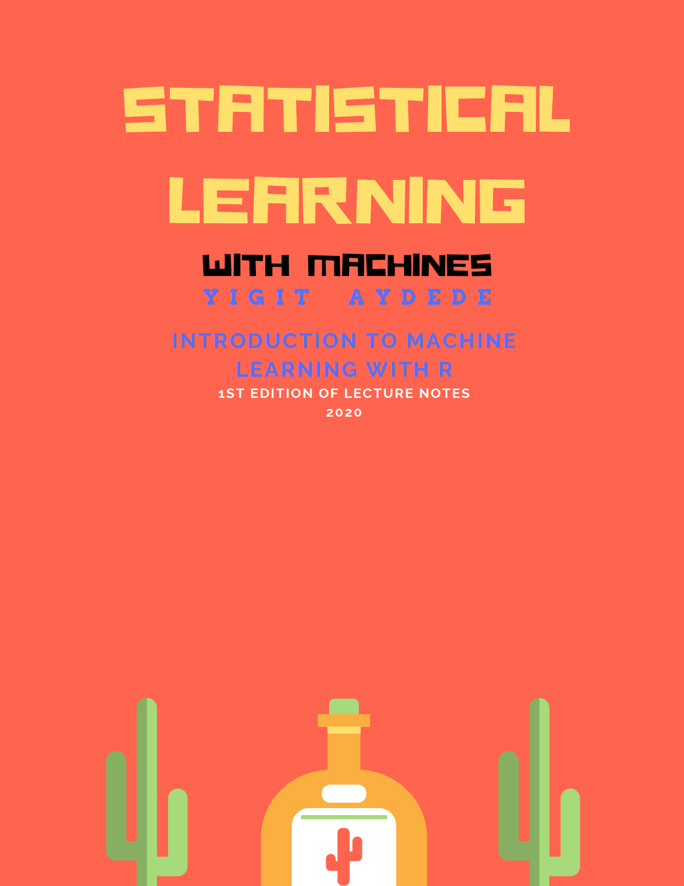

Statistical Learning with Machines
2019-12-07
1 Preface

As of today (December 5, 2019), 7,235,001 people visited the site to view the Machine Learning course offered online by Stanford University at Coursera and 2,668,741 of them are already enrolled. The course starts in December 9, 2019 and can be completed in approximately 56 hours. The course is offered multiple times in a month.
I had a hard time for finding a good title for the book on a field where the level of interest is jaw-dropping. Even finding a good definition for Machine Learning has became a subtle job as “machine learning” seems increasingly an overloaded term implying that a robot-like machine predicts the things by learning itself without being explicitly programmed.
Ethem Alpaydin, who is a professor of computer engineering, defines machine learning in the \(3^{rd}\) edition of his book, Introduction of Machine Learning (MIT Press) as follows:
Machine learning is programming computers to optimize a performance criterion using example data or past experience. We have a model defined up to some parameters, and learning is the execution of a computer program to optimize the parameters of the model using the training data of past experience. (…) Machine learning uses the theory of statistics in building mathematical models, because the core task is making inference from sample. The role of computer science is twofold: First, in training, we need efficient algorithms to solve the optimization problem, as well as to store and process the massive amount of data we generally have. Second, once the model is learned, its representation and algorithmic solution for inference needs to be efficient as well.
Hence, there are no “mysterious” machines that are learning and acting alone, but well-defined statistical models for predictions that are optimized by efficient algortihms and executed by powerful machines, as know as computers. Thus, the name of the book: Statistical Learning with Machines.
This “book” is a collection of my lecture notes for the course, Introduction to Applied Machine Learning with R. The course is first introduced as an undergraduate Economics course in Winter 2020 at Sobey School of Business - Saint Mary’s University. The course is a joint project by multiple researchers at the Research Portal on Machine Learning for Health and Social Policy in Halifax, Canada.
This version is the first draft of uneditted lectures notes. As the book is under development at this stage, you may see lots of annoying typos and some incomplete sentences. I am improving it every other day, therefore, any suggestions is invaluable and very welcomed.